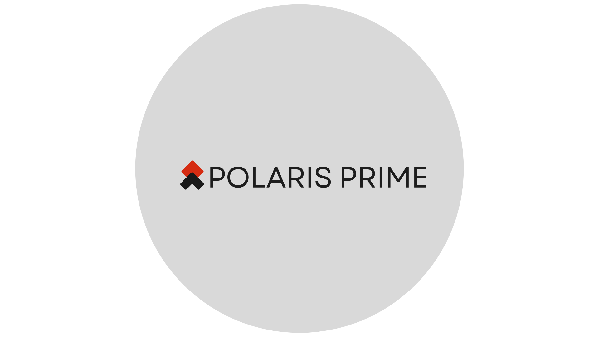
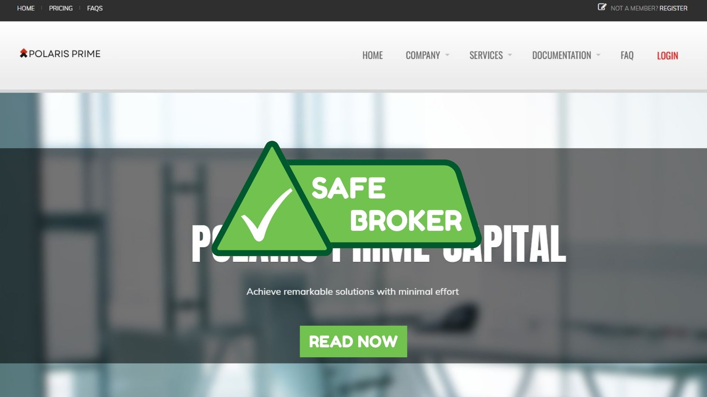

Polaris Prime Capital Review: A Trusted Partner for Smarter, More Confident Trading
Complete analysis of the company | Prevention of fraud | Safe investment
Complete analysis of the company | Prevention of fraud | Safe investment

Polaris Prime Capital is a brokerage firm that trades assets on financial markets, including stocks, forex, and cryptocurrencies. It provides clients with access to a modern trading platform, a range of analytical tools, and personalized support to help traders make informed decisions. The company emphasizes efficiency, security, and profitability, making it suitable for both beginners and experienced traders.
Polaris Prime Capital also offers a range of brokers, allowing clients to choose the person who best matches their trading style and preferences. Whether you prefer a broker who provides step-by-step guidance or one who allows you more independence, there is someone available to support you. This flexibility ensures that every trader can find a partner who suits their needs and helps optimize their performance.
In addition to broker support, the company offers competitive trading conditions, with low commissions relative to the profits traders can generate. Many users find that their earnings are significantly higher than the fees they pay, making the service cost-effective and rewarding. The combination of profitable trades and affordable commissions enhances the overall trading experience and increases confidence in long-term engagement.
